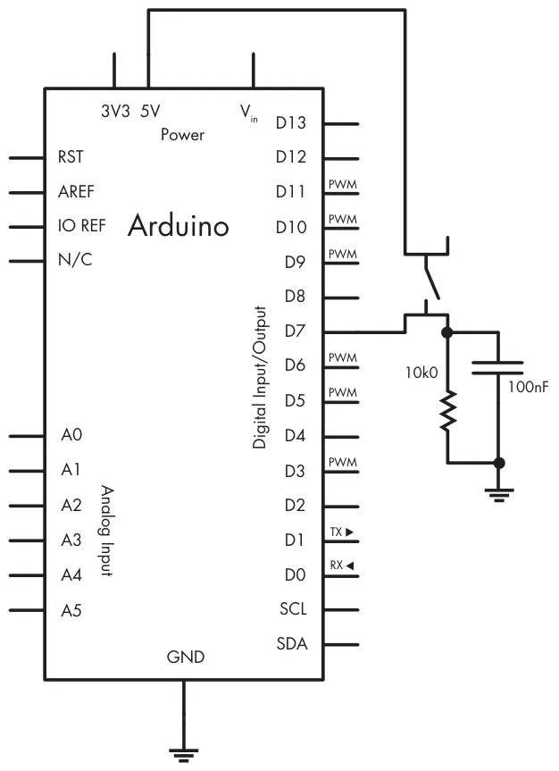

By the end of this project, your Arduino will dial a telephone number when an event occurs, as determined by your Arduino sketch. For example, if the temperature in your storage freezer rises above a certain level or your burglar alarm system activates, you could have the Arduino call you from a preset number for 20 seconds and then hang up. Your phone’s caller ID will identify the phone number as the Arduino.
The Hardware
This project uses the hardware described at the beginning of the chapter as well as any extra circuitry you choose for your application. For demonstration purposes, we’ll use a button to trigger the call.
In addition to the hardware already discussed, here’s what you’ll need to create this project:
- One push button
- One 10 kΩ resistor
- One 100 nF capacitor
- Various connecting wires
- One breadboard
The Schematic
Connect the external circuitry, as shown in Figure 20-9.

The Sketch
Enter but don’t upload the following sketch:
// Project 63 - Building an Arduino Dialer
#include <SoftwareSerial.h>
SoftwareSerial cell(2,3);
void setup()
{
pinMode(7, INPUT);
cell.begin(9600);
❶ delay(30000); // give the GSM module time to initialize network location
}
❷ void callSomeone()
{
❸ cell.println("ATD xxxxxxxxxx "); // dial the phone number xxxxxxxxxx
// change xxxxxxxxxx to your desired phone number (with area code)
delay(20000); // wait 20 seconds.
cell.println("ATH"); // end call
delay(60000); // wait 60 seconds for GSM module
}
void loop()
{
if (digitalRead(7) == HIGH)
{
❹ callSomeone();
}
}How It Works
The module is activated in void setup, and at ❶ we give it some time to locate and register to the network. For our “event,” the Arduino monitors the button connected to digital pin 7. When this button is pressed, the function callSomeone is run at ❷. At ❸, the sketch sends the command to dial a telephone number.
You’ll replace xxxxxxxxxx with the number you want your Arduino to call. Use the same dialing method that you’d use from your mobile phone. For example, if you wanted the Arduino to call 212.555.1212, you’d add this:
cell.println("ATD2125551212");After you have entered the phone number, you can upload the sketch, wait a minute, and then test it by pressing the button. It’s very easy to integrate the dialing function into an existing sketch, because it’s simply called when required at ❹. From here, it’s up to you to find a reason for your Arduino to dial a phone number.
Now let’s drag your Arduino into the 21st century by sending a text message.